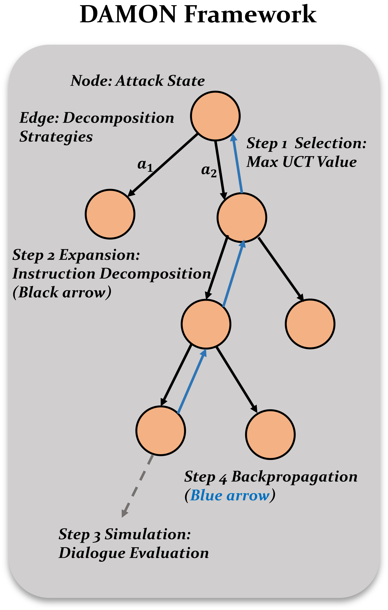

EMNLP 2025Safety across a conversation
DAMON: A Dialogue-Aware MCTS Framework for Jailbreaking Large Language Models
Safety failures can emerge over an evolving conversation; DAMON evaluates this risk with dialogue-aware search, showing why model defenses need testing beyond isolated prompts.
- Result
- On HarmBench against GPT-3.5, DAMON reaches 92.0% attack success rate vs 84.0% for MPA, the strongest baseline; on GPT-4o, ActorAttack edges it (84.5% vs 84.0%).
- New vs prior
- ActorAttack and other multi-turn attacks follow predefined decomposition patterns, and PAIR and TAP refine single-turn prompts; this work searches over decomposition strategies turn by turn with MCTS.
- Limitation
- Attack objectives and the three decomposition strategies are manually designed, and success is judged by GPT-4o, with only 20 HarmBench instances checked by human annotators.

Conversation history belongs in the safety test
A model that refuses a harmful request in one turn may still answer its parts across several, because earlier turns change how later ones are read. DAMON (Dialogue-Aware MONte Carlo Tree Search Attack) is a red-teaming method that searches for a sequence of sub-instructions that hides a refused request's intent yet still elicits a harmful response.
The paper names two requirements: query-aware decomposition, because requests need different splits, and strategy-aware refinement, because the plan must change when the victim model refuses part of it.
Closest prior work
Single-turn jailbreaks either optimize adversarial suffixes with gradients, as in GCG, or refine a whole prompt with an attack LLM, as in PAIR and TAP. Multi-turn attacks decompose a harmful query into less harmful sub-questions or escalate gradually from benign topics, as in Crescendo (Russinovich et al., 2025), but the paper notes that they follow a static, manually designed dialogue pattern; ActorAttack, for instance, builds its interactions from predefined decomposition patterns. DAMON instead treats decomposition as a search problem and chooses among strategies at each turn according to the victim model's responses.
Adaptive search outperforms fixed-pattern attacks in most settings
92.0% vs 84.0%
HarmBench attack success, GPT-3.5: DAMON vs MPA
Attack success rate (ASR): share of instructions whose response the GPT-4o judge rates 5 of 5 for harm. MPA is the strongest of six baselines here.
84.0% → 68.5%
HarmBench ASR on GPT-4o without depth or breadth expansion
Limiting decomposition to one round, or to one strategy, lowers success on every victim model, so iterative and diverse decomposition both matter.
Across 15 model–dataset pairs (five victim models on AdvBench, MaliciousInstruct, and HarmBench), DAMON has the highest attack success rate in 14; the exception is GPT-4o on HarmBench. A small human check agrees: on 20 HarmBench instances with GPT-4o, three annotators judge 85.0% of DAMON's responses harmful and on-task, versus 75.0% for ActorAttack.
Context matters: replaying DAMON's sub-instructions with no preceding dialogue lowers success substantially, and even random unrelated context raises it above the no-context level. Among defenses, a moderation guardrail barely changes success, perplexity filtering lowers it modestly, and paraphrasing works best, yet average success under paraphrasing is still 71%. The authors hypothesize that a gap between pretraining data and safety-alignment data underlies such failures.
Table 1 (HarmBench rows, transposed so that methods are rows and victim models are columns). Attack success rate (%), the share of test instructions whose response the GPT-4o judge rated 5 on a 1-5 harmfulness scale; higher means more safety failures were elicited. ActorAttack exceeds DAMON on GPT-4o (84.5% vs. 84.0%). Source ↗
| Method | Qwen2.5-7B | LLaMA2-13B | LLaMA3-8B | GPT-3.5 | GPT-4o |
|---|---|---|---|---|---|
| GCG | 59.2% | 30.0% | 34.5% | 55.8% | 12.5% |
| AutoDAN | 47.3% | 4.8% | 7.2% | 2.0% | 0.5% |
| PAIR | 50.2% | 14.2% | 12.0% | 41.0% | 39.0% |
| TAP | 53.0% | 15.0% | 13.0% | 83.5% | 59.0% |
| MPA | 79.5% | 53.5% | 82.5% | 84.0% | 48.5% |
| ActorAttack | 80.5% | 85.0% | 79.0% | 78.5% | 84.5% |
| DAMON | 83.0% | 86.5% | 84.5% | 92.0% | 84.0% |
Method proposed in the paper
Scope. Results depend on the tested model versions, manually specified objectives, and evaluation protocol. The study diagnoses vulnerabilities; it does not establish comprehensive safety or a complete defense. Read the study ↗
Read the abstract
While large language models (LLMs) demonstrate remarkable capabilities across a wide range of tasks, they remain vulnerable to generating outputs that are potentially harmful. Red teaming, which involves crafting adversarial inputs to expose vulnerabilities, is a widely adopted approach for evaluating the robustness of these models. Prior studies have indicated that LLMs are susceptible to vulnerabilities exposed through multi-turn interactions as opposed to single-turn scenarios. Nevertheless, existing methods for multi-turn attacks mainly utilize a predefined dialogue pattern, limiting their effectiveness in realistic situations. Effective attacks require adaptive dialogue strategies that respond dynamically to the initial user prompt and the evolving context of the conversation. To address these limitations, we propose DAMON, a novel multi-turn jailbreak attack method. DAMON leverages Monte Carlo Tree Search (MCTS) to systematically explore multi-turn conversational spaces, efficiently identifying sub-instruction sequences that induce harmful responses. We evaluate DAMON’s efficacy across five LLMs and three datasets. Our experimental results show that DAMON can effectively induce undesired behaviors.
Full paper ↗Citation BibTeX
@inproceedings{zhang-etal-2025-damon,
title = {{DAMON}: A Dialogue-Aware {MCTS} Framework for Jailbreaking Large Language Models},
author = {Zhang, Xu and Yin, Xunjian and Jing, Dinghao and Zhang, Huixuan and Hu, Xinyu and Wan, Xiaojun},
booktitle = {Proceedings of the 2025 Conference on Empirical Methods in Natural Language Processing},
year = {2025},
url = {https://aclanthology.org/2025.emnlp-main.323/},
pages = {6350--6366}
}